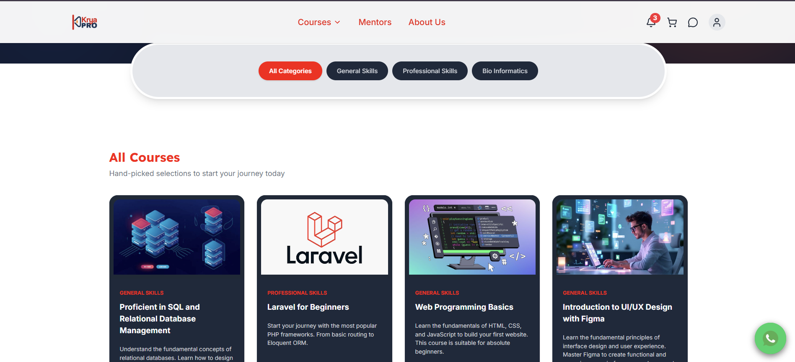
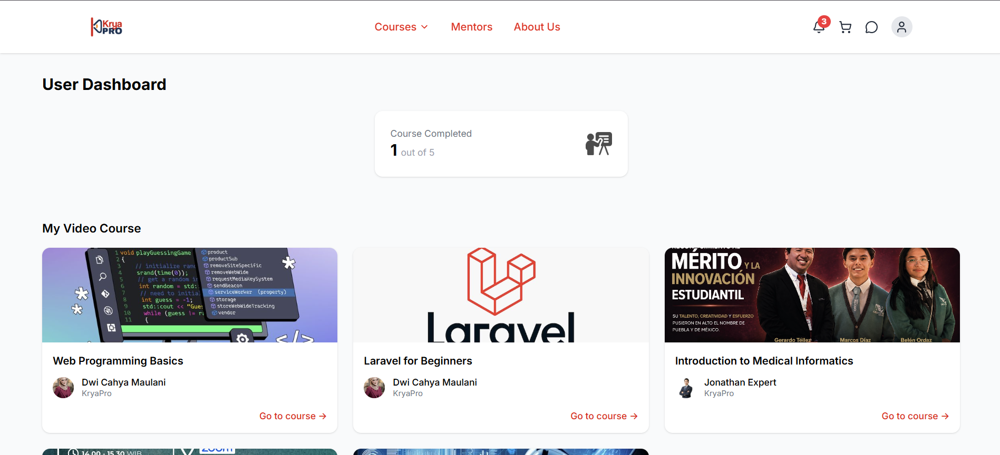
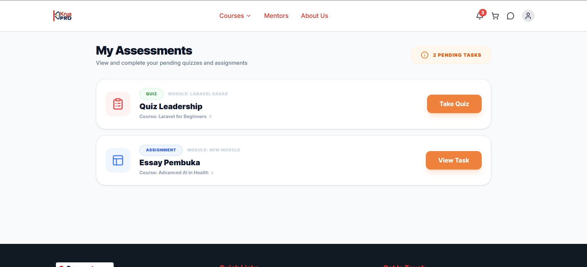
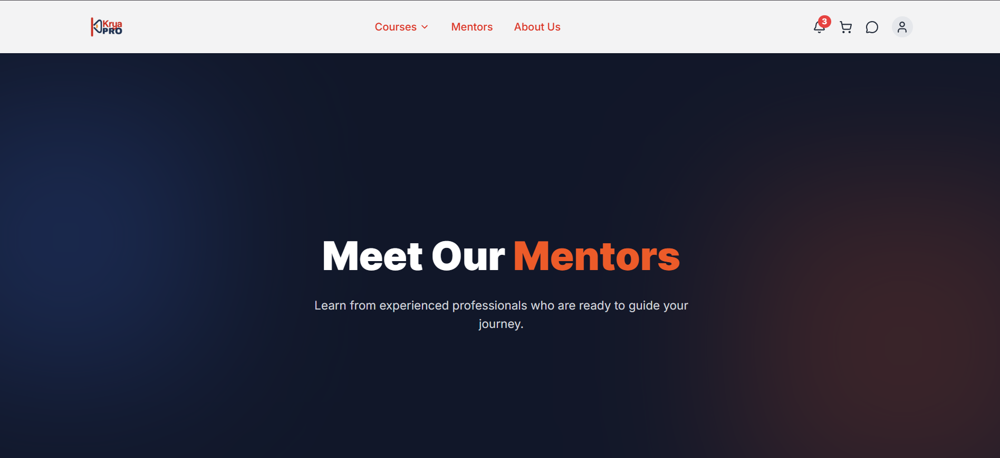

Frontend Developer (Full-Stack Contribution)
ReactJS, Tailwind CSS, Laravel
Feb 2026 - Jun 2026
KryaPro LMS is a web-based Learning Management System developed during an internship at Krya Global. The platform is designed to support structured online learning by providing students with a centralized space to access courses, complete assessments, and interact with mentors. I was responsible for building the complete student-facing side of the application from scratch — covering the Landing Page, Dashboard, Assessment module, Mentor Page, and additional supporting pages — using ReactJS with a Laravel backend. Beyond core frontend development, I also contributed to frontend-backend integration and assisted in backend troubleshooting to ensure smooth data flow across the application.
Designed and developed the public-facing landing page to communicate the platform's value proposition, key features, and onboarding entry points for new users. Focused on clear visual hierarchy and responsive layout across devices.

Built the main student dashboard that presents enrolled courses, learning progress, upcoming schedules, and activity summaries in a clean and scannable layout, allowing students to track their learning journey at a glance.

Developed an interactive assessment interface where students can attempt quizzes and assignments tied to their courses. Handled dynamic question rendering, answer submission, and result display with real-time state management in React.

Implemented the mentor discovery and profile page, enabling students to browse available mentors, view mentor profiles and expertise, and initiate learning interactions — integrated with the backend API for live data fetching.

Started by understanding the product requirements from the internship team and breaking down the student-facing features into reusable React components. Planned the component hierarchy and state management approach before writing any code.
Built each page from scratch using ReactJS with Tailwind CSS for styling. Focused on producing responsive, accessible, and consistent UI across all student-facing modules, following the design specifications provided by the team.
Connected the React frontend to the Laravel backend through REST API calls, handling data fetching, loading states, error boundaries, and response mapping for each module. Ensured consistent data flow between student actions and backend logic.
Contributed beyond the frontend scope by assisting the backend team in identifying and resolving issues that surfaced during integration — including API response inconsistencies and data mapping errors.
Conducted iterative testing across modules to ensure UI correctness, API integration stability, and responsive behavior. Incorporated feedback from the team to refine component logic and improve the overall user experience.